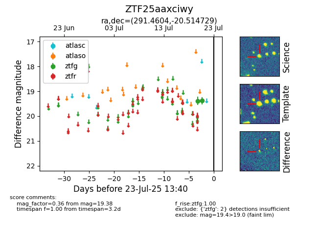

Target ZTF25aaxciwy at 2025-08-05 23:02, see:
FINK: fink-portal.org/ZTF25aaxciwy
Lasair: lasair-ztf.lsst.ac.uk/objects/ZTF25aaxciwy
ALeRCE: alerce.online/object/ZTF25aaxciwy
alt names
ZTF25aaxciwy (ztf,fink)
coordinates:
equatorial (ra, dec) = (291.4604,-20.51473)
galactic (l, b) = (17.9382,-16.52640)
photometry
last ztfg=19.38
2 ztfg detections
